Rational Functions
Suppose we know that the cost of making a product is dependent on the number of items, produced. This is given by the equation If we want to know the average cost for producing items, we would divide the cost function by the number of items,
The average cost function, which yields the average cost per item for items produced, is
Many other application problems require finding an average value in a similar way, giving us variables in the denominator. Written without a variable in the denominator, this function will contain a negative integer power.
In the last few sections, we have worked with polynomial functions, which are functions with non-negative integers for exponents. In this section, we explore rational functions, which have variables in the denominator.
Using Arrow Notation
We have seen the graphs of the basic reciprocal function and the squared reciprocal function from our study of toolkit functions. Examine these graphs, as shown in Figure 1, and notice some of their features.
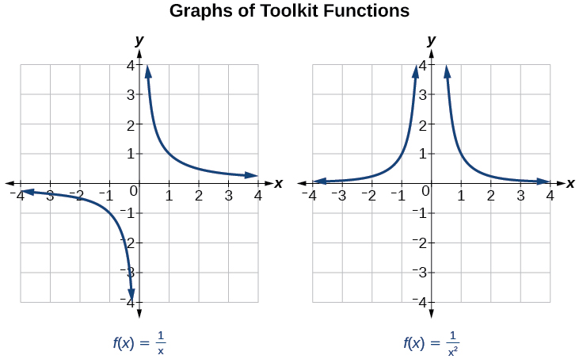
Several things are apparent if we examine the graph of
- On the left branch of the graph, the curve approaches the x-axis
- As the graph approaches from the left, the curve drops, but as we approach zero from the right, the curve rises.
- Finally, on the right branch of the graph, the curves approaches the x-axis
To summarize, we use arrow notation to show that or is approaching a particular value. See Table 1.
| Symbol | Meaning |
|---|---|
| approaches from the left ( but close to ) | |
| approaches from the right ( but close to ) | |
| approaches infinity ( increases without bound) | |
| approaches negative infinity ( decreases without bound) | |
| the output approaches infinity (the output increases without bound) | |
| the output approaches negative infinity (the output decreases without bound) | |
| the output approaches |
Local Behavior of
Let’s begin by looking at the reciprocal function, We cannot divide by zero, which means the function is undefined at so zero is not in the domain. As the input values approach zero from the left side (becoming very small, negative values), the function values decrease without bound (in other words, they approach negative infinity). We can see this behavior in Table 2.
| –0.1 | –0.01 | –0.001 | –0.0001 | |
| –10 | –100 | –1000 | –10,000 |
We write in arrow notation
As the input values approach zero from the right side (becoming very small, positive values), the function values increase without bound (approaching infinity). We can see this behavior in Table 3.
| 0.1 | 0.01 | 0.001 | 0.0001 | |
| 10 | 100 | 1000 | 10,000 |
We write in arrow notation
See Figure 2.
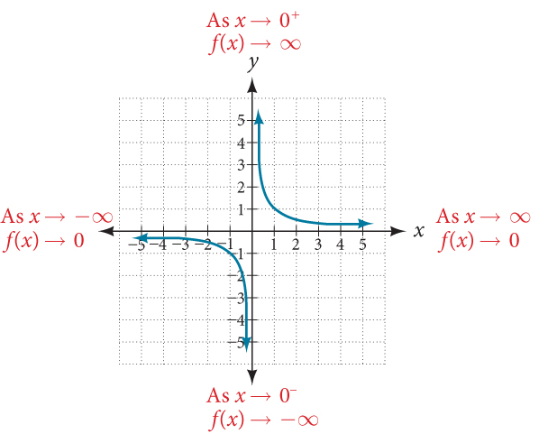
This behavior creates a vertical asymptote, which is a vertical line that the graph approaches but never crosses. In this case, the graph is approaching the vertical line as the input becomes close to zero. See Figure 3.
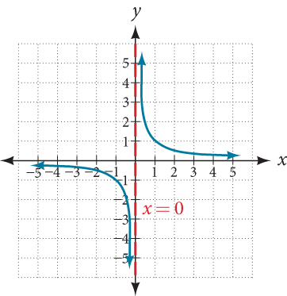
End Behavior of
As the values of approach infinity, the function values approach 0. As the values of approach negative infinity, the function values approach 0. See Figure 4. Symbolically, using arrow notation
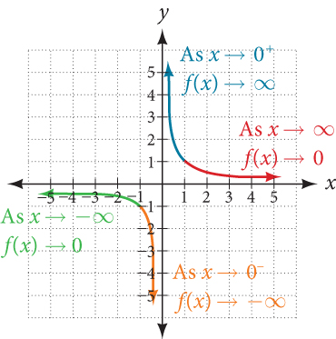
Based on this overall behavior and the graph, we can see that the function approaches 0 but never actually reaches 0; it seems to level off as the inputs become large. This behavior creates a horizontal asymptote, a horizontal line that the graph approaches as the input increases or decreases without bound. In this case, the graph is approaching the horizontal line See Figure 5.
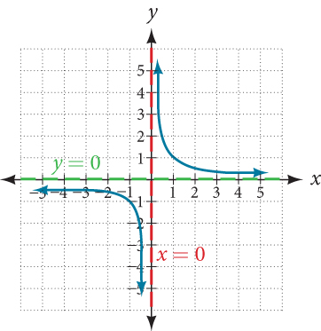
Using Arrow Notation
Use arrow notation to describe the end behavior and local behavior of the function graphed in Figure 6.
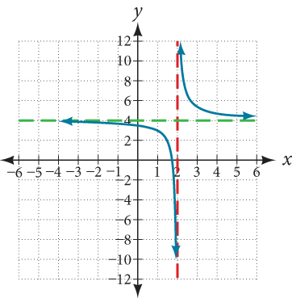
Solution
Notice that the graph is showing a vertical asymptote at which tells us that the function is undefined at
And as the inputs decrease without bound, the graph appears to be leveling off at output values of 4, indicating a horizontal asymptote at As the inputs increase without bound, the graph levels off at 4.
Using Transformations to Graph a Rational Function
Sketch a graph of the reciprocal function shifted two units to the left and up three units. Identify the horizontal and vertical asymptotes of the graph, if any.
Solution
Shifting the graph left 2 and up 3 would result in the function
or equivalently, by giving the terms a common denominator,
The graph of the shifted function is displayed in Figure 7.
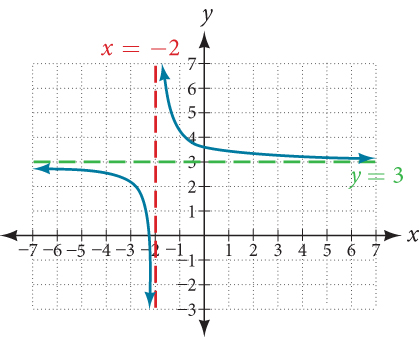
Notice that this function is undefined at and the graph also is showing a vertical asymptote at
As the inputs increase and decrease without bound, the graph appears to be leveling off at output values of 3, indicating a horizontal asymptote at
Solving Applied Problems Involving Rational Functions
In Example 2, we shifted a toolkit function in a way that resulted in the function This is an example of a rational function. A rational function is a function that can be written as the quotient of two polynomial functions. Many real-world problems require us to find the ratio of two polynomial functions. Problems involving rates and concentrations often involve rational functions.
Solving an Applied Problem Involving a Rational Function
After running out of pre-packaged supplies, a nurse in a refugee camp is preparing an intravenous sugar solution for patients in the camp hospital. A large mixing tank currently contains 100 gallons of water into which 5 pounds of sugar have been mixed. A tap will open pouring 10 gallons per minute of distilled water into the tank at the same time sugar is poured into the tank at a rate of 1 pound per minute. Find the concentration (pounds per gallon) of sugar in the tank after 12 minutes. Is that a greater concentration than at the beginning?
Solution
Let be the number of minutes since the tap opened. Since the water increases at 10 gallons per minute, and the sugar increases at 1 pound per minute, these are constant rates of change. This tells us the amount of water in the tank is changing linearly, as is the amount of sugar in the tank. We can write an equation independently for each:
The concentration, will be the ratio of pounds of sugar to gallons of water
The concentration after 12 minutes is given by evaluating at
This means the concentration is 17 pounds of sugar to 220 gallons of water.
At the beginning, the concentration is
Since the concentration is greater after 12 minutes than at the beginning.
Analysis
To find the horizontal asymptote, divide the leading coefficient in the numerator by the leading coefficient in the denominator:
Notice the horizontal asymptote is This means the concentration, the ratio of pounds of sugar to gallons of water, will approach 0.1 in the long term.
Finding the Domains of Rational Functions
A vertical asymptote represents a value at which a rational function is undefined, so that value is not in the domain of the function. A reciprocal function cannot have values in its domain that cause the denominator to equal zero. In general, to find the domain of a rational function, we need to determine which inputs would cause division by zero.
Finding the Domain of a Rational Function
Find the domain of
Solution
Begin by setting the denominator equal to zero and solving.
The denominator is equal to zero when The domain of the function is all real numbers except
Analysis
A graph of this function, as shown in Figure 8, confirms that the function is not defined when
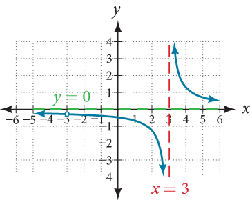
There is a vertical asymptote at and a hole in the graph at We will discuss these types of holes in greater detail later in this section.
Identifying Vertical Asymptotes of Rational Functions
By looking at the graph of a rational function, we can investigate its local behavior and easily see whether there are asymptotes. We may even be able to approximate their location. Even without the graph, however, we can still determine whether a given rational function has any asymptotes, and calculate their location.
Vertical Asymptotes
The vertical asymptotes of a rational function may be found by examining the factors of the denominator that are not common to the factors in the numerator. Vertical asymptotes occur at the zeros of such factors.
Identifying Vertical Asymptotes
Find the vertical asymptotes of the graph of
Solution
First, factor the numerator and denominator.
To find the vertical asymptotes, we determine where this function will be undefined by setting the denominator equal to zero:
Neither nor are zeros of the numerator, so the two values indicate two vertical asymptotes. The graph in Figure 9 confirms the location of the two vertical asymptotes.
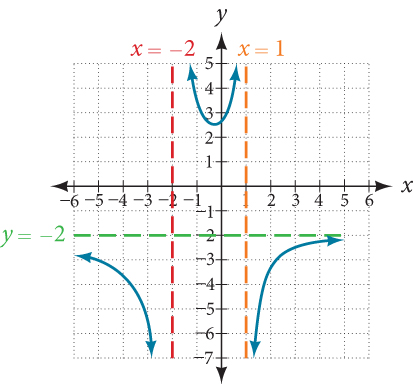
Removable Discontinuities
Occasionally, a graph will contain a hole: a single point where the graph is not defined, indicated by an open circle. We call such a hole a removable discontinuity.
For example, the function may be re-written by factoring the numerator and the denominator.
Notice that is a common factor to the numerator and the denominator. The zero of this factor, is the location of the removable discontinuity. Notice also that is not a factor in both the numerator and denominator. The zero of this factor, is the vertical asymptote. See Figure 10.
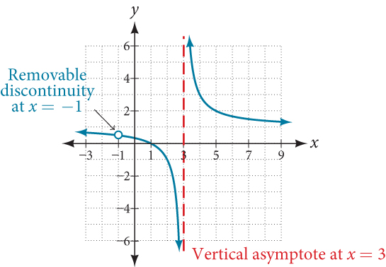
Identifying Vertical Asymptotes and Removable Discontinuities for a Graph
Find the vertical asymptotes and removable discontinuities of the graph of
Solution
Factor the numerator and the denominator.
Notice that there is a common factor in the numerator and the denominator, The zero for this factor is This is the location of the removable discontinuity.
Notice that there is a factor in the denominator that is not in the numerator, The zero for this factor is The vertical asymptote is See Figure 11.
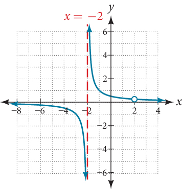
The graph of this function will have the vertical asymptote at but at the graph will have a hole.
Identifying Horizontal Asymptotes of Rational Functions
While vertical asymptotes describe the behavior of a graph as the output gets very large or very small, horizontal asymptotes help describe the behavior of a graph as the input gets very large or very small. Recall that a polynomial’s end behavior will mirror that of the leading term. Likewise, a rational function’s end behavior will mirror that of the ratio of the leading terms of the numerator and denominator functions.
There are three distinct outcomes when checking for horizontal asymptotes:
Case 1: If the degree of the denominator > degree of the numerator, there is a horizontal asymptote at
In this case, the end behavior is This tells us that, as the inputs increase or decrease without bound, this function will behave similarly to the function and the outputs will approach zero, resulting in a horizontal asymptote at See Figure 12. Note that this graph crosses the horizontal asymptote.
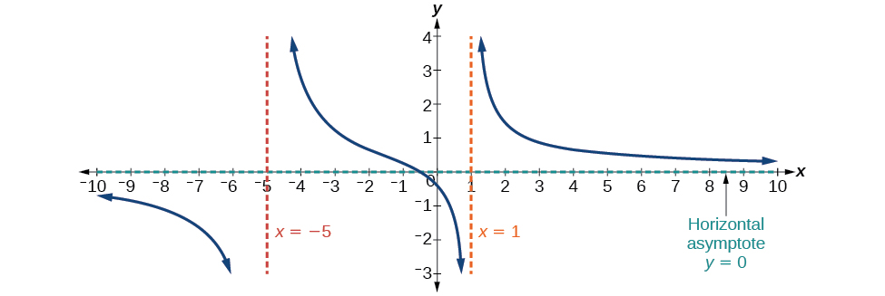
Case 2: If the degree of the denominator < degree of the numerator by one, we get a slant asymptote.
In this case, the end behavior is This tells us that as the inputs increase or decrease without bound, this function will behave similarly to the function As the inputs grow large, the outputs will grow and not level off, so this graph has no horizontal asymptote. However, the graph of looks like a diagonal line, and since will behave similarly to it will approach a line close to This line is a slant asymptote.
To find the equation of the slant asymptote, divide The quotient is and the remainder is 2. The slant asymptote is the graph of the line See Figure 13.
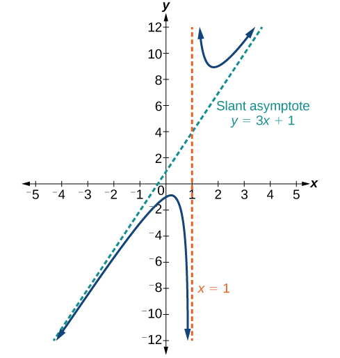
Case 3: If the degree of the denominator = degree of the numerator, there is a horizontal asymptote at where and are the leading coefficients of and for
In this case, the end behavior is This tells us that as the inputs grow large, this function will behave like the function which is a horizontal line. As resulting in a horizontal asymptote at See Figure 14. Note that this graph crosses the horizontal asymptote.
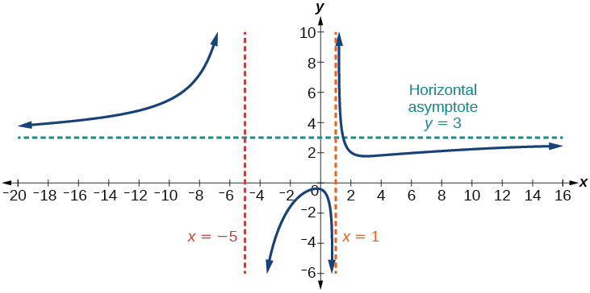
Notice that, while the graph of a rational function will never cross a vertical asymptote, the graph may or may not cross a horizontal or slant asymptote. Also, although the graph of a rational function may have many vertical asymptotes, the graph will have at most one horizontal (or slant) asymptote.
It should be noted that, if the degree of the numerator is larger than the degree of the denominator by more than one, the end behavior of the graph will mimic the behavior of the reduced end behavior fraction. For instance, if we had the function
with end behavior
the end behavior of the graph would look similar to that of an even polynomial with a positive leading coefficient.
Identifying Horizontal and Slant Asymptotes
For the functions below, identify the horizontal or slant asymptote.
- ⓐ
- ⓑ
- ⓒ
Solution
For these solutions, we will use
- ⓐ The degree of so we can find the horizontal asymptote by taking the ratio of the leading terms. There is a horizontal asymptote at or
- ⓑ The degree of and degree of Since by 1, there is a slant asymptote found at
The quotient is and the remainder is 13. There is a slant asymptote at
- ⓒ The degree of degree of so there is a horizontal asymptote
Identifying Horizontal Asymptotes
In the sugar concentration problem earlier, we created the equation
Find the horizontal asymptote and interpret it in context of the problem.
Solution
Both the numerator and denominator are linear (degree 1). Because the degrees are equal, there will be a horizontal asymptote at the ratio of the leading coefficients. In the numerator, the leading term is with coefficient 1. In the denominator, the leading term is with coefficient 10. The horizontal asymptote will be at the ratio of these values:
This function will have a horizontal asymptote at
This tells us that as the values of t increase, the values of will approach In context, this means that, as more time goes by, the concentration of sugar in the tank will approach one-tenth of a pound of sugar per gallon of water or pounds per gallon.
Identifying Horizontal and Vertical Asymptotes
Find the horizontal and vertical asymptotes of the function
Solution
First, note that this function has no common factors, so there are no potential removable discontinuities.
The function will have vertical asymptotes when the denominator is zero, causing the function to be undefined. The denominator will be zero at indicating vertical asymptotes at these values.
The numerator has degree 2, while the denominator has degree 3. Since the degree of the denominator is greater than the degree of the numerator, the denominator will grow faster than the numerator, causing the outputs to tend towards zero as the inputs get large, and so as This function will have a horizontal asymptote at See Figure 15.
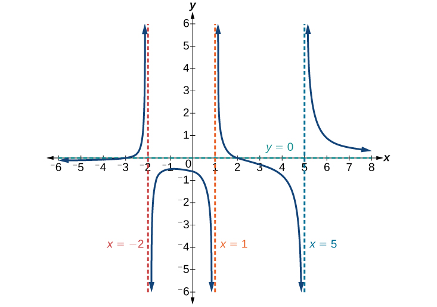
Finding the Intercepts of a Rational Function
Find the intercepts of
Solution
We can find the y-intercept by evaluating the function at zero
The x-intercepts will occur when the function is equal to zero:
The y-intercept is the x-intercepts are and See Figure 16.
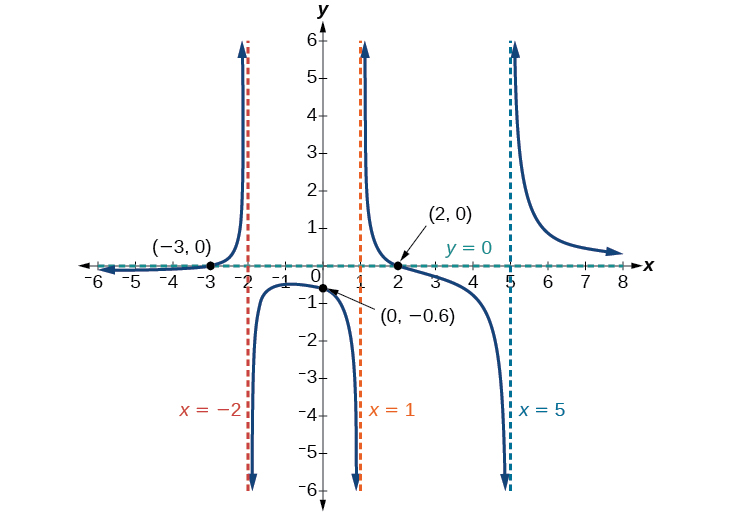
Graphing Rational Functions
In Example 9, we see that the numerator of a rational function reveals the x-intercepts of the graph, whereas the denominator reveals the vertical asymptotes of the graph. As with polynomials, factors of the numerator may have integer powers greater than one. Fortunately, the effect on the shape of the graph at those intercepts is the same as we saw with polynomials.
The vertical asymptotes associated with the factors of the denominator will mirror one of the two toolkit reciprocal functions. When the degree of the factor in the denominator is odd, the distinguishing characteristic is that on one side of the vertical asymptote the graph heads towards positive infinity, and on the other side the graph heads towards negative infinity. See Figure 17.
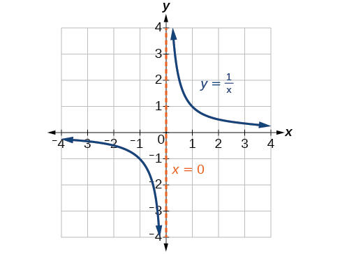
When the degree of the factor in the denominator is even, the distinguishing characteristic is that the graph either heads toward positive infinity on both sides of the vertical asymptote or heads toward negative infinity on both sides. See Figure 18.
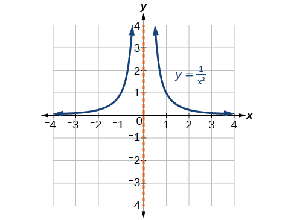
For example, the graph of is shown in Figure 19.
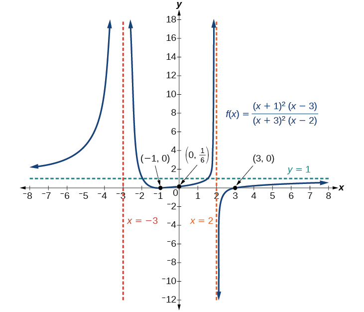
- At the x-intercept corresponding to the factor of the numerator, the graph bounces, consistent with the quadratic nature of the factor.
- At the x-intercept corresponding to the factor of the numerator, the graph passes through the axis as we would expect from a linear factor.
- At the vertical asymptote corresponding to the factor of the denominator, the graph heads towards positive infinity on both sides of the asymptote, consistent with the behavior of the function
- At the vertical asymptote corresponding to the factor of the denominator, the graph heads towards positive infinity on the left side of the asymptote and towards negative infinity on the right side.
Graphing a Rational Function
Sketch a graph of
Solution
We can start by noting that the function is already factored, saving us a step.
Next, we will find the intercepts. Evaluating the function at zero gives the y-intercept:
To find the x-intercepts, we determine when the numerator of the function is zero. Setting each factor equal to zero, we find x-intercepts at and At each, the behavior will be linear (multiplicity 1), with the graph passing through the intercept.
We have a y-intercept at and x-intercepts at and
To find the vertical asymptotes, we determine when the denominator is equal to zero. This occurs when and when giving us vertical asymptotes at and
There are no common factors in the numerator and denominator. This means there are no removable discontinuities.
Finally, the degree of denominator is larger than the degree of the numerator, telling us this graph has a horizontal asymptote at
To sketch the graph, we might start by plotting the three intercepts. Since the graph has no x-intercepts between the vertical asymptotes, and the y-intercept is positive, we know the function must remain positive between the asymptotes, letting us fill in the middle portion of the graph as shown in Figure 20.
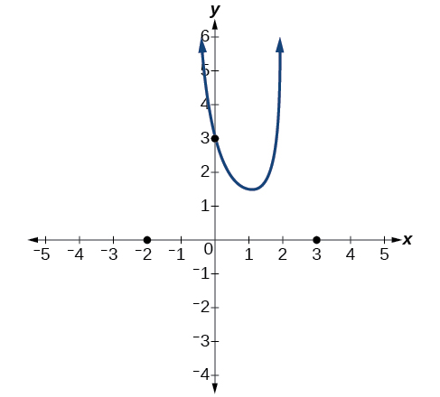
The factor associated with the vertical asymptote at was squared, so we know the behavior will be the same on both sides of the asymptote. The graph heads toward positive infinity as the inputs approach the asymptote on the right, so the graph will head toward positive infinity on the left as well.
For the vertical asymptote at the factor was not squared, so the graph will have opposite behavior on either side of the asymptote. See Figure 21. After passing through the x-intercepts, the graph will then level off toward an output of zero, as indicated by the horizontal asymptote.
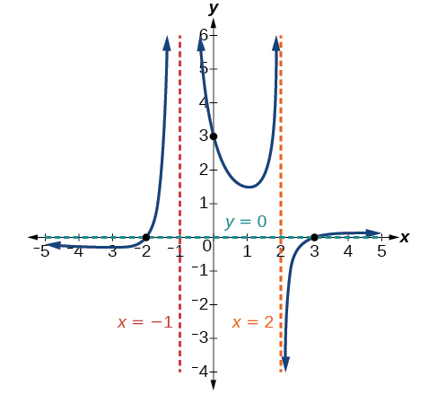
Writing Rational Functions
Now that we have analyzed the equations for rational functions and how they relate to a graph of the function, we can use information given by a graph to write the function. A rational function written in factored form will have an x-intercept where each factor of the numerator is equal to zero. (An exception occurs in the case of a removable discontinuity.) As a result, we can form a numerator of a function whose graph will pass through a set of x-intercepts by introducing a corresponding set of factors. Likewise, because the function will have a vertical asymptote where each factor of the denominator is equal to zero, we can form a denominator that will produce the vertical asymptotes by introducing a corresponding set of factors.
Writing a Rational Function from Intercepts and Asymptotes
Write an equation for the rational function shown in Figure 22.
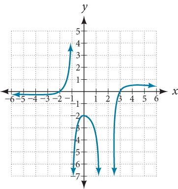
Solution
The graph appears to have x-intercepts at and At both, the graph passes through the intercept, suggesting linear factors. The graph has two vertical asymptotes. The one at seems to exhibit the basic behavior similar to with the graph heading toward positive infinity on one side and heading toward negative infinity on the other. The asymptote at is exhibiting a behavior similar to with the graph heading toward negative infinity on both sides of the asymptote. See Figure 23.
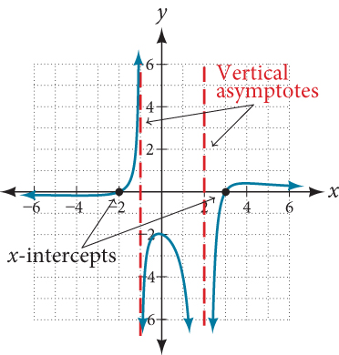
We can use this information to write a function of the form
To find the stretch factor, we can use another clear point on the graph, such as the y-intercept
This gives us a final function of
Key Equations
| Rational Function |
Key Concepts
- We can use arrow notation to describe local behavior and end behavior of the toolkit functions and See Example 1.
- A function that levels off at a horizontal value has a horizontal asymptote. A function can have more than one vertical asymptote. See Example 2.
- Application problems involving rates and concentrations often involve rational functions. See Example 3.
- The domain of a rational function includes all real numbers except those that cause the denominator to equal zero. See Example 4.
- The vertical asymptotes of a rational function will occur where the denominator of the function is equal to zero and the numerator is not zero. See Example 5.
- A removable discontinuity might occur in the graph of a rational function if an input causes both numerator and denominator to be zero. See Example 6.
- A rational function’s end behavior will mirror that of the ratio of the leading terms of the numerator and denominator functions. See Example 7, Example 8, Example 9, and Example 10.
- Graph rational functions by finding the intercepts, behavior at the intercepts and asymptotes, and end behavior. See Example 11.
- If a rational function has x-intercepts at vertical asymptotes at and no then the function can be written in the form
See Example 12.
Section Exercises
Verbal
What is the fundamental difference in the algebraic representation of a polynomial function and a rational function?
Solution
The rational function will be represented by a quotient of polynomial functions.
What is the fundamental difference in the graphs of polynomial functions and rational functions?
If the graph of a rational function has a removable discontinuity, what must be true of the functional rule?
Solution
The numerator and denominator must have a common factor.
Can a graph of a rational function have no vertical asymptote? If so, how?
Can a graph of a rational function have no x-intercepts? If so, how?
Solution
Yes. The numerator of the formula of the functions would have only complex roots and/or factors common to both the numerator and denominator.
Algebraic
For the following exercises, find the domain of the rational functions.
Solution
Solution
For the following exercises, find the domain, vertical asymptotes, and horizontal asymptotes of the functions.
Solution
V.A. at H.A. at Domain is all reals
Solution
V.A. at H.A. at Domain is all reals
Solution
V.A. at H.A. at Domain is all reals
Solution
V.A. at H.A. at Domain is all reals
Solution
V.A. at H.A. at Domain is all reals
For the following exercises, find the x- and y-intercepts for the functions.
Solution
none
Solution
For the following exercises, describe the local and end behavior of the functions.
Solution
Local behavior:
End behavior:
Solution
Local behavior: End behavior:
Solution
Local behavior: ,
End behavior:
For the following exercises, find the slant asymptote of the functions.
Solution
Solution
Graphical
For the following exercises, use the given transformation to graph the function. Note the vertical and horizontal asymptotes.
The reciprocal function shifted up two units.
Solution

The reciprocal function shifted down one unit and left three units.
The reciprocal squared function shifted to the right 2 units.
Solution
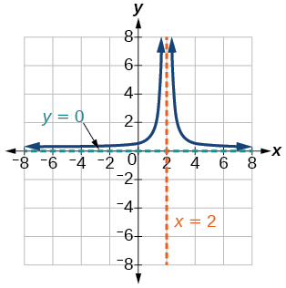
The reciprocal squared function shifted down 2 units and right 1 unit.
For the following exercises, find the horizontal intercepts, the vertical intercept, the vertical asymptotes, and the horizontal or slant asymptote of the functions. Use that information to sketch a graph.
Solution
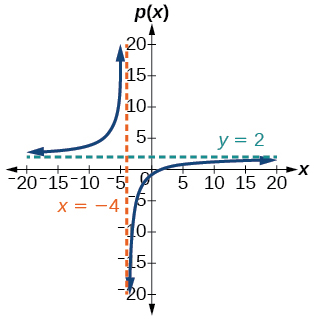
Solution
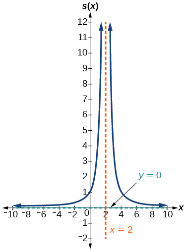
Solution
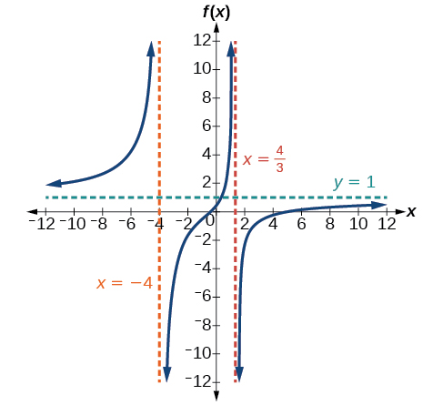
Solution
; removable discontinuity (hole) at
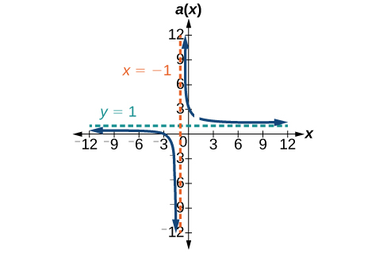
Solution
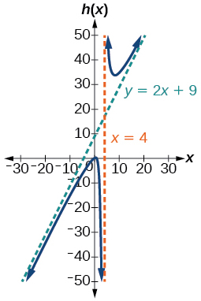
Solution
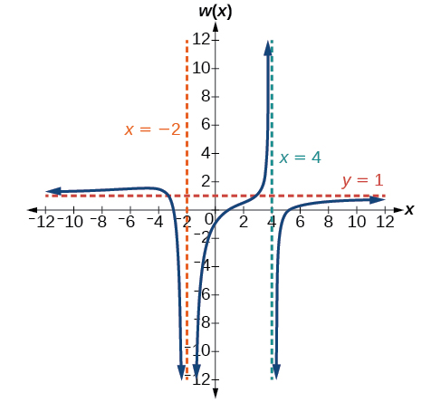
For the following exercises, write an equation for a rational function with the given characteristics.
Vertical asymptotes at and x-intercepts at and y-intercept at
Solution
Vertical asymptotes at and x-intercepts at and y-intercept at
Vertical asymptotes at and x-intercepts at and Horizontal asymptote at
Solution
Vertical asymptotes at and x-intercepts at and Horizontal asymptote at
Vertical asymptote at Double zero at y-intercept at
Solution
Vertical asymptote at Double zero at y-intercept at
For the following exercises, use the graphs to write an equation for the function.
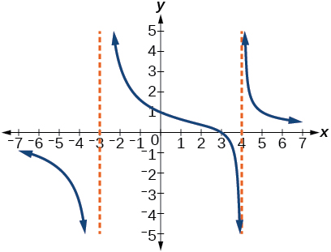
Solution
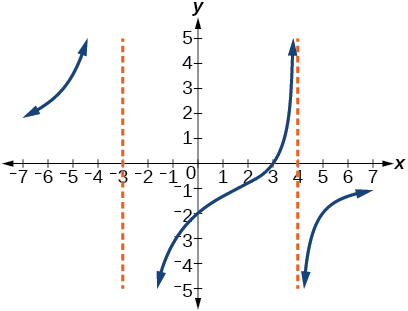
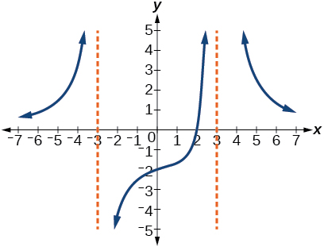
Solution
27(x - 2) / ((x - 3)² (x + 3))
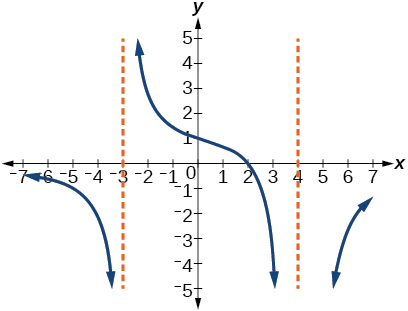
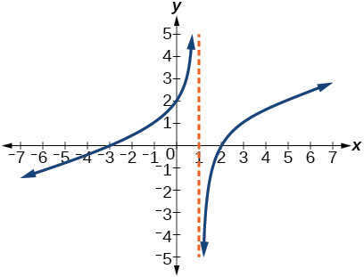
Solution
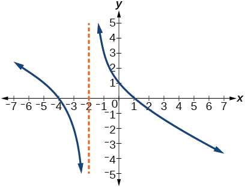
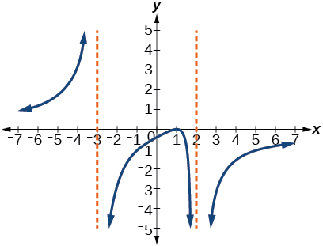
Solution
Use as the additional point.
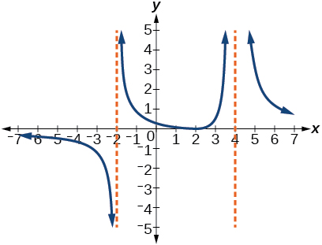
Numeric
For the following exercises, make tables to show the behavior of the function near the vertical asymptote and reflecting the horizontal asymptote
Solution
| 2.01 | 2.001 | 2.0001 | 1.99 | 1.999 | |
| 100 | 1,000 | 10,000 | –100 | –1,000 |
| 10 | 100 | 1,000 | 10,000 | 100,000 | |
| .125 | .0102 | .001 | .0001 | .00001 |
Vertical asymptote Horizontal asymptote
Solution
| –4.1 | –4.01 | –4.001 | –3.99 | –3.999 | |
| 82 | 802 | 8,002 | –798 | –7998 |
| 10 | 100 | 1,000 | 10,000 | 100,000 | |
| 1.4286 | 1.9331 | 1.992 | 1.9992 | 1.999992 |
Vertical asymptote Horizontal asymptote
Solution
| –.9 | –.99 | –.999 | –1.1 | –1.01 | |
| 81 | 9,801 | 998,001 | 121 | 10,201 |
| 10 | 100 | 1,000 | 10,000 | 100,000 | |
| .82645 | .9803 | .998 | .9998 |
Vertical asymptote Horizontal asymptote
Technology
For the following exercises, use a calculator to graph Use the graph to solve
Solution
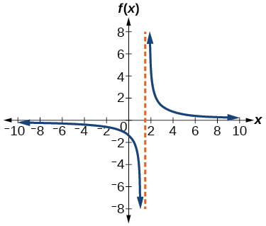
Solution
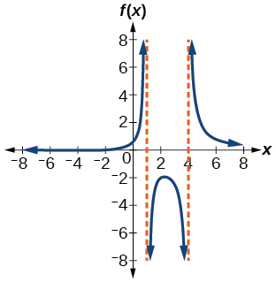
Extensions
For the following exercises, identify the removable discontinuity.
Solution
Solution
Solution
Real-World Applications
For the following exercises, express a rational function that describes the situation.
In the refugee camp hospital, a large mixing tank currently contains 200 gallons of water, into which 10 pounds of sugar have been mixed. A tap will open, pouring 10 gallons of water per minute into the tank at the same time sugar is poured into the tank at a rate of 3 pounds per minute. Find the concentration (pounds per gallon) of sugar in the tank after minutes.
In the refugee camp hospital, a large mixing tank currently contains 300 gallons of water, into which 8 pounds of sugar have been mixed. A tap will open, pouring 20 gallons of water per minute into the tank at the same time sugar is poured into the tank at a rate of 2 pounds per minute. Find the concentration (pounds per gallon) of sugar in the tank after minutes.
Solution
For the following exercises, use the given rational function to answer the question.
The concentration of a drug in a patient’s bloodstream hours after injection in given by What happens to the concentration of the drug as increases?
The concentration of a drug in a patient’s bloodstream hours after injection is given by Use a calculator to approximate the time when the concentration is highest.
Solution
After about 6.12 hours.
For the following exercises, construct a rational function that will help solve the problem. Then, use a calculator to answer the question.
An open box with a square base is to have a volume of 108 cubic inches. Find the dimensions of the box that will have minimum surface area. Let = length of the side of the base.
A rectangular box with a square base is to have a volume of 20 cubic feet. The material for the base costs 30 cents/ square foot. The material for the sides costs 10 cents/square foot. The material for the top costs 20 cents/square foot. Determine the dimensions that will yield minimum cost. Let = length of the side of the base.
Solution
2 by 2 by 5 feet.
A right circular cylinder has volume of 100 cubic inches. Find the radius and height that will yield minimum surface area. Let = radius.
A right circular cylinder with no top has a volume of 50 cubic meters. Find the radius that will yield minimum surface area. Let = radius.
Solution
Radius = 2.52 meters.
A right circular cylinder is to have a volume of 40 cubic inches. It costs 4 cents/square inch to construct the top and bottom and 1 cent/square inch to construct the rest of the cylinder. Find the radius to yield minimum cost. Let = radius.
Analysis
Notice that horizontal and vertical asymptotes are shifted left 2 and up 3 along with the function.